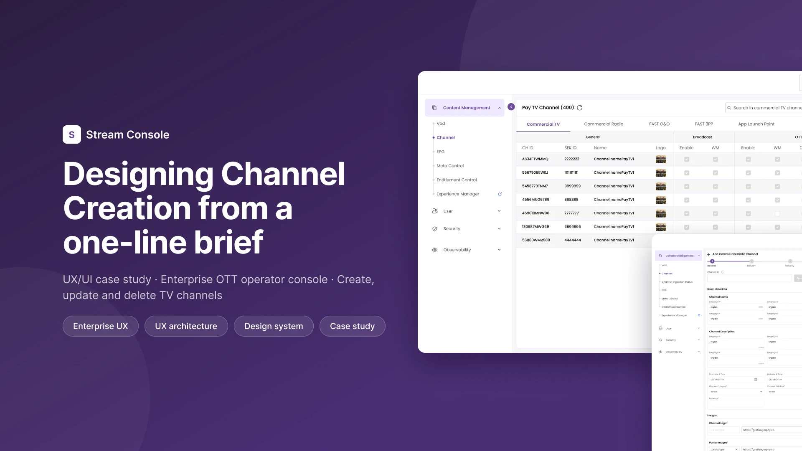

Which fields matter?
Metadata, delivery, security, monetisation and advertising were all unlisted.
The request was a single sentence. Working with Solution Architecture and Engineering, I turned it into a five step system with about 150 fields that operators use to create, update and delete TV channels.
NoteClient branding has been removed from all screens and the data shown is placeholder data.

Channel Creation started with one line from the business: "We need to build channel creation." Nobody yet knew how many languages, delivery types or security rules a channel would need.
My first job was not screens. It was helping the team find out what a channel actually is.
Metadata, delivery, security, monetisation and advertising were all unlisted.
Some values only make sense after another is set, and that logic was not written down.
Bouquet Management and Catalogue linking only appeared once we mapped what a channel needs to go live.
"We need to build channel creation." No spec, no field list.
Channel creation live for operators.
Update, job tracking, safe deletion and recordings added on the same pattern.
The Solution Architect, Solution Developer and Senior Developer sat with me session after session. Each saw the problem differently, and we only trusted the field list once all three agreed with it.
Entitlement and delivery rules every field had to respect.
Mapped backend models to what the form had to capture.
What could be built, and which fields depended on others.
| Step | Fields | What it covers |
|---|---|---|
| Channel type | Entry | Commercial TV, Commercial Radio, FAST O&O, FAST 3PP or App Launch Point |
| 1. General | ~30 | Names and descriptions per language, dates, definition, category, images, offers, audience, catalogue |
| 2. Delivery | ~35 | Broadcast and OTT delivery, origin and streaming settings |
| 3. Security | ~30 | DRM, watermarking, entitlement and access rules |
| 4. Enablers | ~20 | Switches that turn channel features on or off |
| 5. Advertisement | ~20 | Ad insertion, monetisation and campaign settings |
| Preview | Review | A read only summary of everything entered, before the channel is created |
Counts per section are approximate. The total in production is close to 150.
The order follows how operators think about a channel: what it is, how it is delivered, how it is protected, what it can do and how it earns money.
| Decision | Usual alternative | Why I chose it | What it costs |
|---|---|---|---|
| Steps chosen by channel type | One long form, or tabs | Each field lives in one focused step, and the type hides fields that don't apply | More clicks to reach a field in a later step |
| Next is enabled only when the step is complete | Validate everything on submit | Errors can't pile up across five steps and appear all at once at the end | A disabled button doesn't explain what is missing on its own |
| Read only preview before create | Submit straight from the last step | A channel reaches real viewers, so the last step is a full review | One extra step on every create and update |
| Confirm before create and on save | Save without asking | The confirmation names the exact channel, which matters in a table of hundreds | Friction on frequent, low risk edits |
| Same steps for update | A separate edit screen | Nothing new to learn, and the preview can show what changed | Update inherits every limit of the create flow |
Each distribution type gets its own tab. Broadcast and OTT columns are grouped, and enable, watermark and DRM can be toggled in the row.
Every create, update and delete starts a backend job. Instead of a spinner, each job shows its current stage: Merging, Transforming, Matching or Publishing, with start and end times so support can answer "when did this go live?"
Updating uses the same steps as creating. In Preview, the fields that changed since the last save are highlighted with the same colours as the audit comparison.
| Channel category | |
|---|---|
| Audio languages | Tamil (added) |
| Definition | Ultra High Definition (no change) |
Deleting a channel that is still live could leave a viewer's recording pointing at a channel that no longer exists. So delete is a short sequence of checks instead of one click.
Delete flow
| Number | What it describes |
|---|---|
| ~150 | Fields found and grouped into five steps (scope) |
| 1 | Form pattern shared by create and update (reuse) |
| 12+ | Releases built on the same pattern without redesigning it (durability) |
Naming the fields with Architecture and Engineering was part of the UX. The form couldn't be designed until the scope was known.
Once the fields were grouped well, their number stopped being the problem.
Disable before delete became a proper flow from the start, not a patch later.